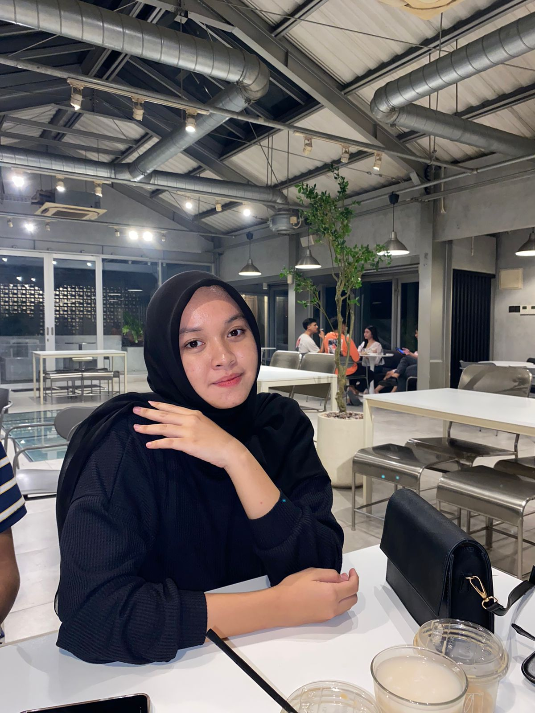
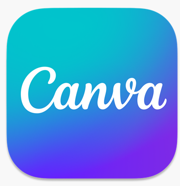

Portfolio
I love design and anything related to art. i approach problem in a rational and pragmatic way and seek the simplest and most functional solutions possible.
Hello
I'm Shiwi! A student majored in informatics Engineering based in Siliwangi University. i'm interested in challenging myself to gain new knowledges and developing my creativity in fun and creative designs. i consider myself as a hard-working and easy to adapt. i hope my abilities to contribute to growth of your firm.
Shiwi Ainun Ginanjar
UI/UX Designer
Experience
UI/UX Design

Design Animated Canva
 Animated
AnimatedEducation
2019-2021 Senior High School 2 ciamis
2022-Now Siliwangi University
My skill
Why Hire Me
Adaptability
I can quickly adapt to changes and feedback. This ability allows me to take a dynamic approach to the design process, ensuring that the final result meets expetatons and changing needs.
Client Testimonials

perusahaan/Organisasi Client
123 Tech Innovations
" I would like to thank Shiwi for an outstanding job. They not only provided an innovative solution, but also responded very quickly to our changes and feedback. Collaborationg with Shiwi was a very positive experience, and we look forward to working togerher again in the future."

Perusahaan/Organisasi Client
XYZ Corporation
"Pekerjaan yang dilakukan oleh shiwi sangat mengesankan. Meraka tidak hanya memenuhi ekspetasi kami, tetapi juga melampaui harapan. Kreativitas profesionalisme, dan dedikasi mereka luar biasa. Kami sangat senang bekerja dengan Shiwi dan akan merekomendasikan mereka kepada siapa pun yang akan membutuhkan layanan berkualitas tinggi."